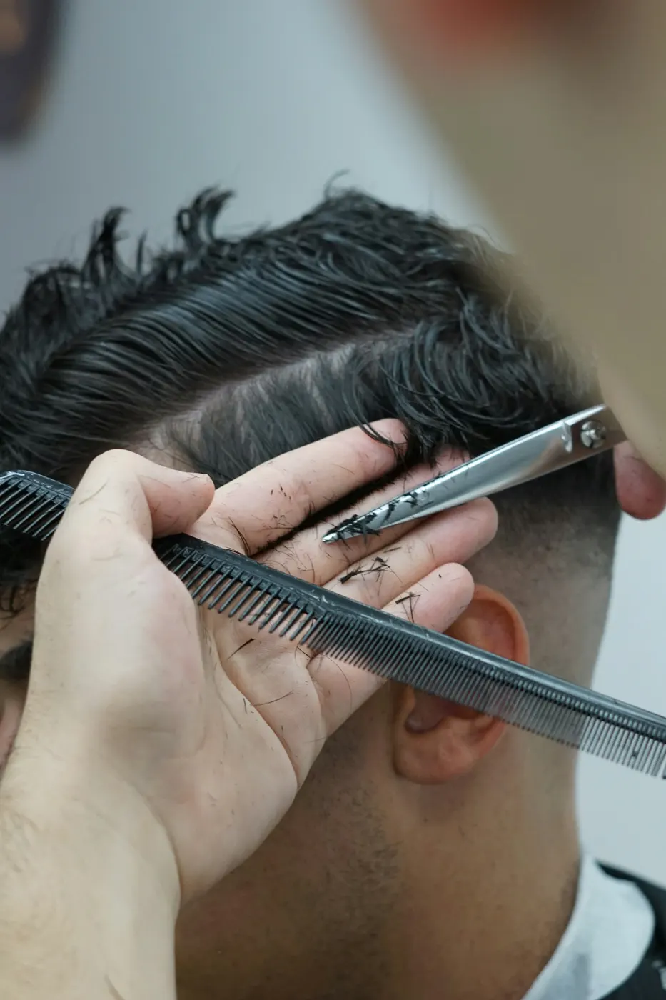
Corte na tesoura
Lavagem, corte todo na tesoura e finalização com pomada ou pasta.
45 minR$ 70
Agendar
Curitiba
Agendar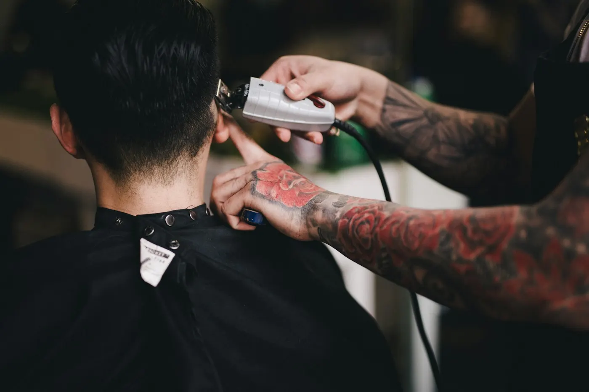
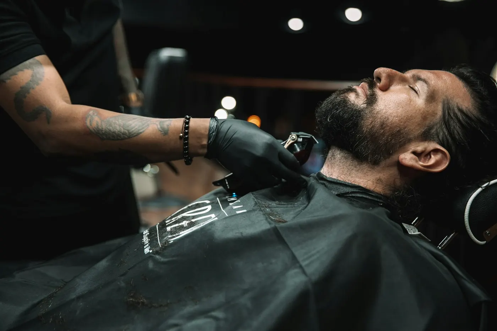
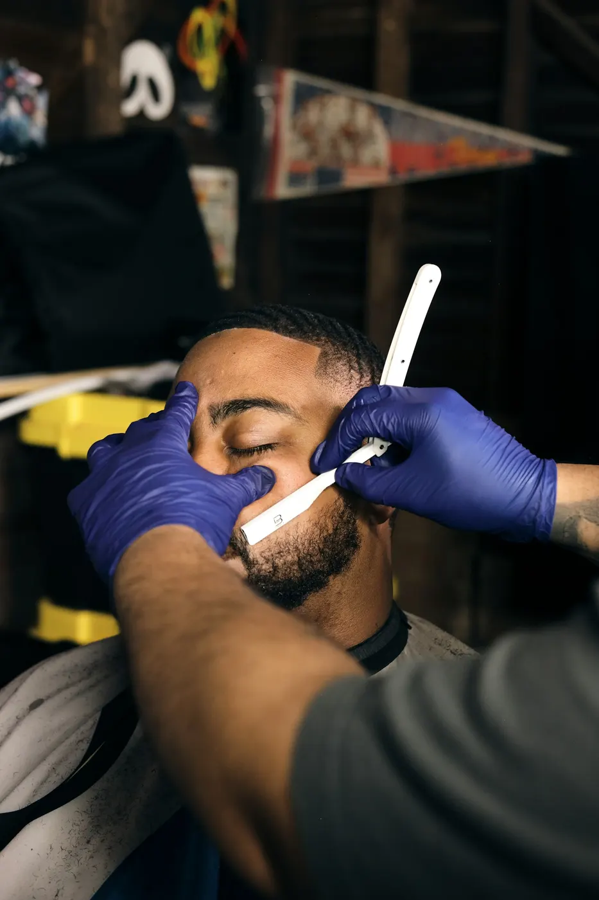
Curitiba, Batel
Barbearia com hora marcada no Batel. Corte na tesoura, degradê, barba com toalha quente e sobrancelha na navalha, com quatro barbeiros e preço fechado antes de começar.
Feita no capricho desde 2016
A Cobre nasceu num sobrado do Batel com duas cadeiras e uma regra: ninguém liga a máquina antes de entender o que o cliente quer. Hoje são quatro barbeiros, cada um com a sua especialidade, e a regra continua a mesma.
Do corte clássico na tesoura ao degradê à mão livre, todo serviço termina com acabamento na navalha, toalha limpa e o espelho de mão para você conferir a nuca.
Conhecer a equipe

Serviços e preços
Escolha o segmento. Cada serviço mostra quanto tempo leva e quanto custa, e o botão já leva para o agendamento com ele selecionado.
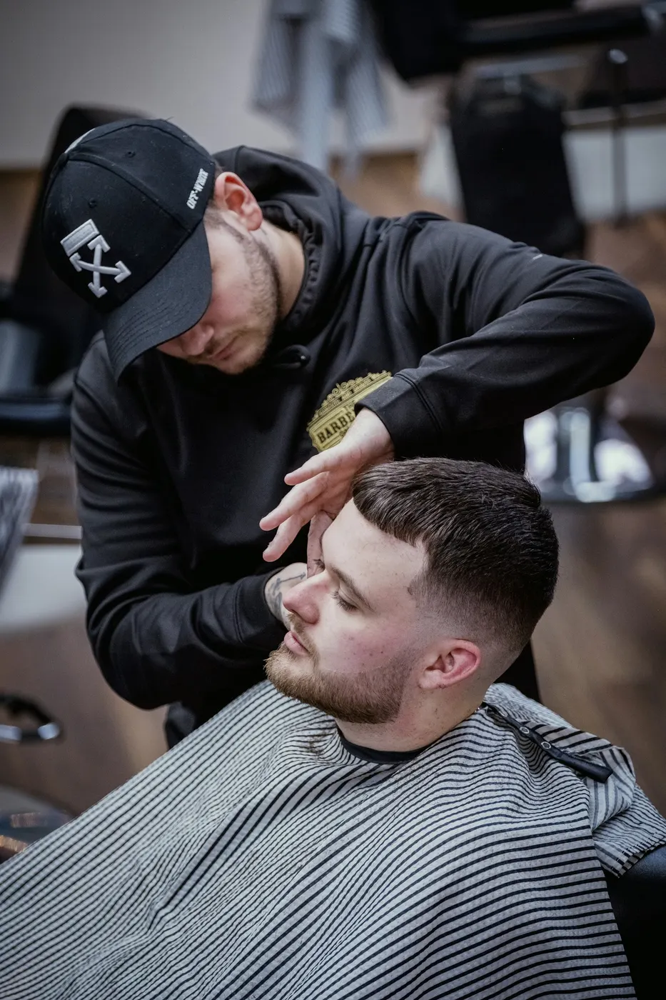
Tesoura, máquina e navalha. O corte começa pela conversa no espelho.

Lavagem, corte todo na tesoura e finalização com pomada ou pasta.
Fade do zero (ou do pente que você quiser) até o comprimento de cima, acabamento na navalha.

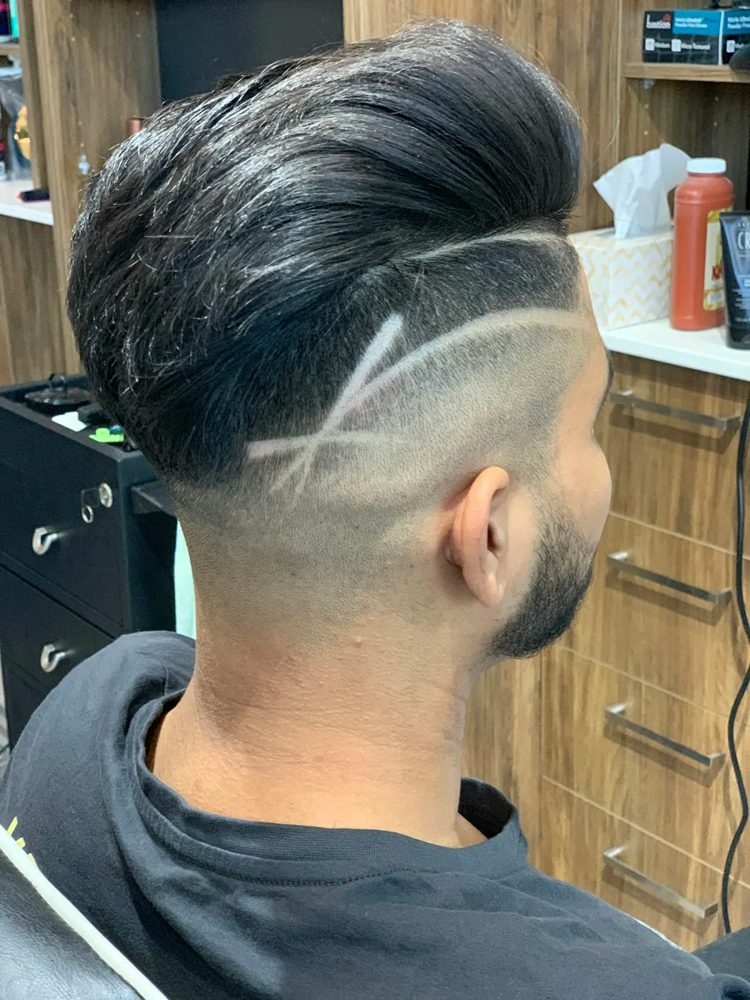
Linha ou desenho na lateral feito na navalha. Só junto com um corte.
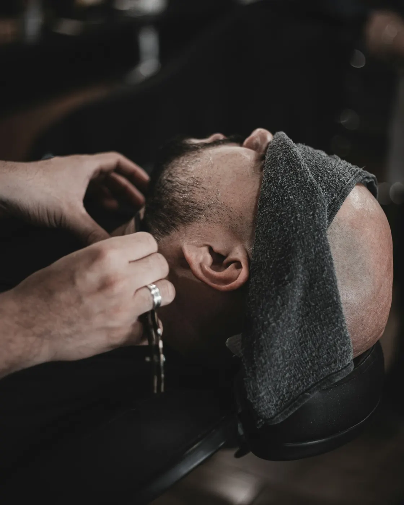
Toalha quente, óleo, navalha nova e o desenho que combina com o seu rosto.

Toalha quente, óleo pré-barba, navalha descartável e balm no fim.
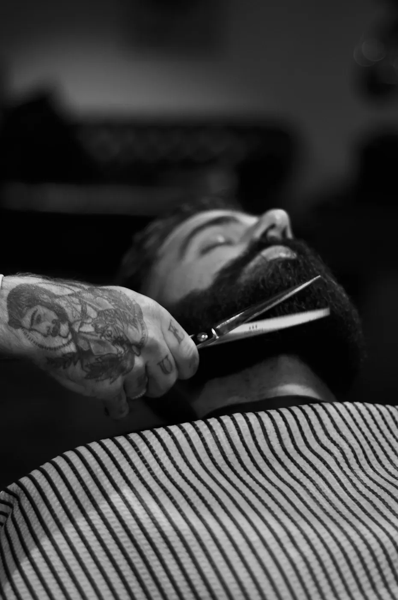
Para quem quer manter o volume: tesoura, pente e contorno na navalha.
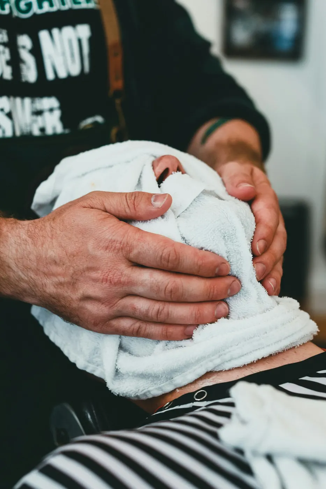
Vapor de ozônio, esfoliação, duas toalhas quentes, navalha e máscara calmante.
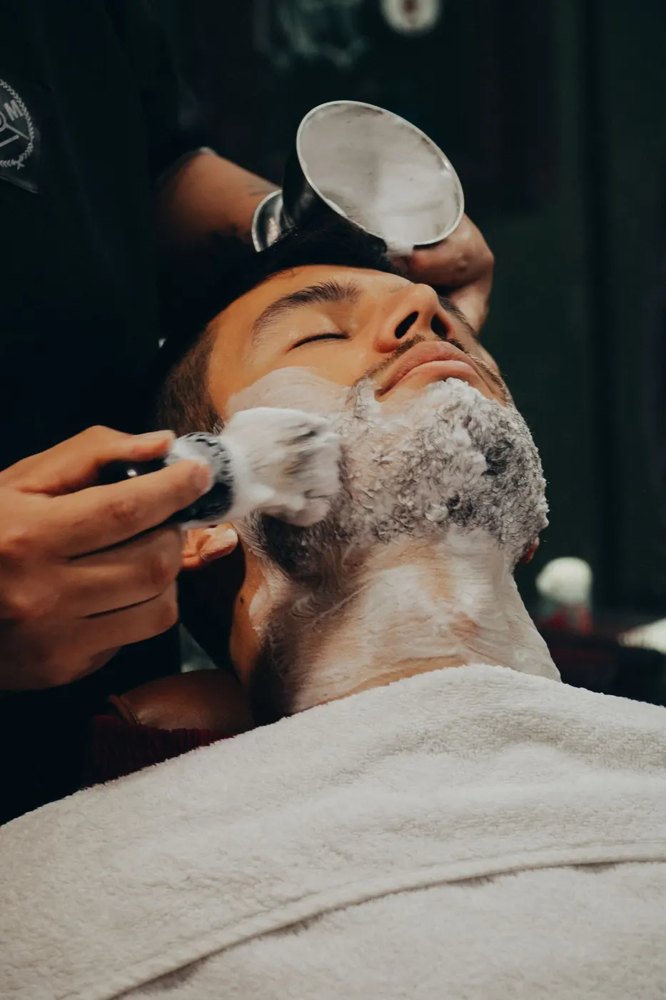
Preenche falhas e uniformiza a cor. Teste de sensibilidade 48 horas antes.

Detalhes que fecham o visual: sobrancelha limpa, pezinho e nuca alinhados.
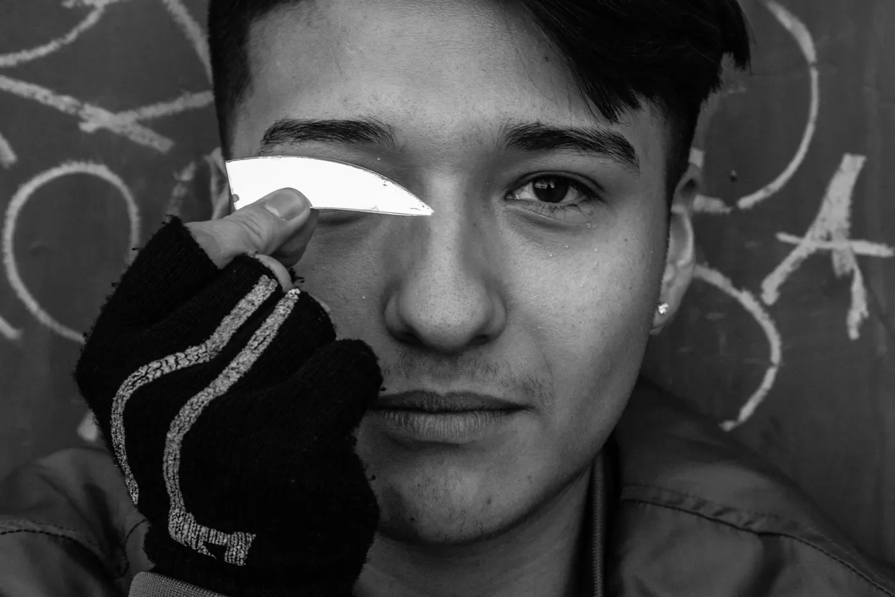

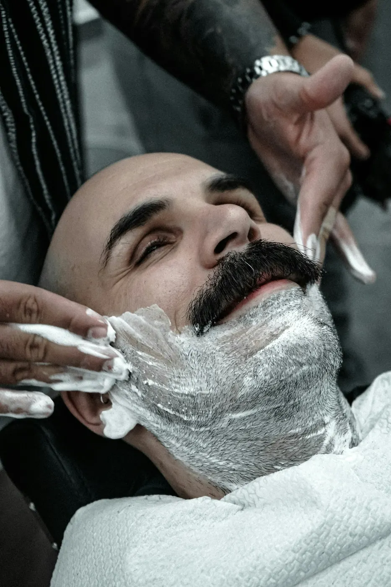
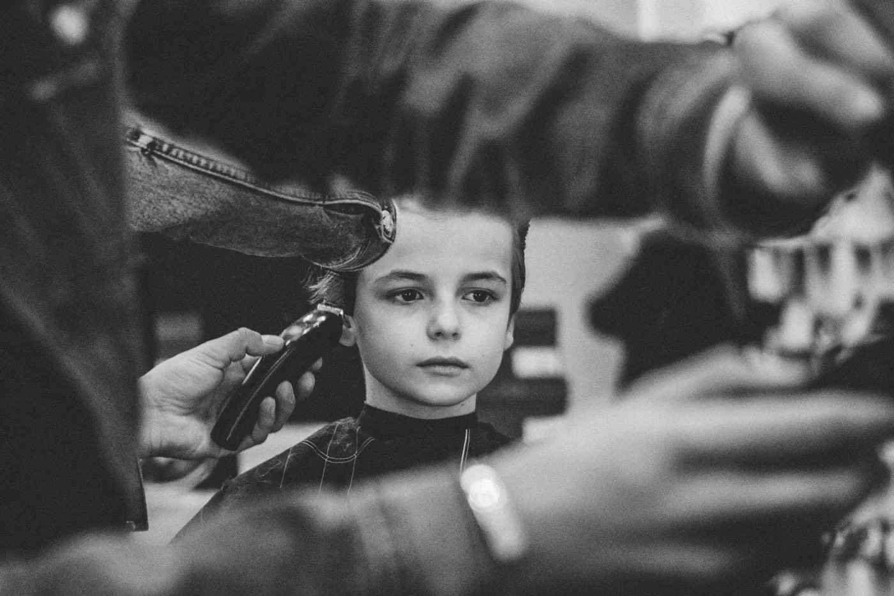
Cadeira com assento alto, paciência e desenho animado na tela.

Até 12 anos. Pode trazer o brinquedo, a gente espera o tempo da criança.
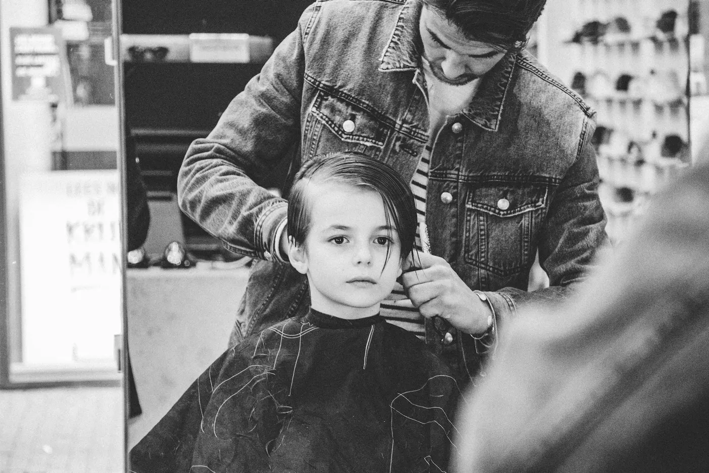
Pix, débito e crédito. Pacotes em até 2 vezes sem juros. A pigmentação começa com teste de sensibilidade 48 horas antes.
Pacotes da casa
O par mais pedido da casa, na mesma cadeira.
R$ 115separados sairiam R$ 130
1h15 de cadeira
Uma hora e meia de cadeira para sair outro.
R$ 175separados sairiam R$ 210
1h40 de cadeira
Quem corta
Galeria
Toque numa foto para ver maior. Fotos de banco de imagens: no site do cliente entram as do próprio espaço.
Quem já sentou na cadeira
1.380 avaliações no Google
Cheguei com foto de referência e o Jefferson explicou o que dava para fazer com o meu cacho antes de ligar a máquina. Ficou melhor que a foto.
A barboterapia é o meu momento do mês. Toalha quente de verdade, navalha aberta na minha frente e silêncio quando eu quero.
Levei meu filho para o primeiro corte. O Rodrigo teve uma paciência enorme e ainda guardou a mecha num envelope.
Agendei pelo site em dois minutos, escolhi o barbeiro e o horário. Chegou a confirmação no WhatsApp logo depois.
Sobrancelha sem exagero, do jeito que eu pedi. Ninguém percebeu que eu fiz, só que eu estava com a cara mais descansada.
Preço igual ao do site, horário cumprido e um café coado bom na espera. Virei cliente de quinze em quinze dias.
Cobre Barbearia. Batel, Curitiba. Agenda pelo link.
 2149Nuca limpa e degradê baixo para começar a semana.
2149Nuca limpa e degradê baixo para começar a semana. 38821Pompadour com pincel de talco no fim. Clássico que não sai de moda.
1766Contorno na navalha, linha reta de orelha a orelha.
38821Pompadour com pincel de talco no fim. Clássico que não sai de moda.
1766Contorno na navalha, linha reta de orelha a orelha. 25114Máscara de argila na barboterapia de sexta.
25114Máscara de argila na barboterapia de sexta. 1424Pezinho entre um corte e outro: 15 minutos e você volta pro trabalho.
1424Pezinho entre um corte e outro: 15 minutos e você volta pro trabalho.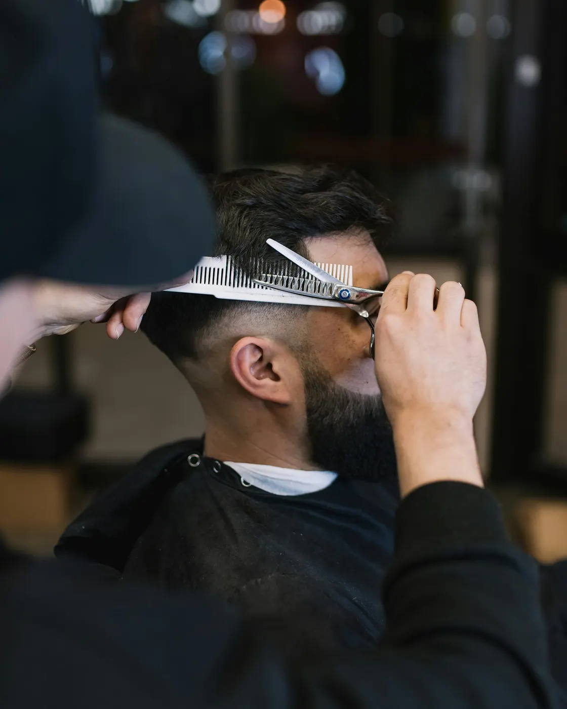
29711Pente e tesoura para tirar só o volume de cima.Agendamento
O pedido chega no nosso WhatsApp com tudo preenchido. Confirmamos em até uma hora no horário de funcionamento.
Dúvidas
Não achou a resposta? Chame no WhatsApp, quem responde é a recepção da casa.
Perguntar no WhatsAppAgendar garante a cadeira e o barbeiro que você quer. Sem horário, atendemos se houver cadeira livre; sábado à tarde costuma ter espera.
De 30 a 45 minutos, conforme o serviço. Corte e barba leva cerca de 1h15 e o Ritual Cobre, 1h40. A duração aparece em cada serviço e no resumo do agendamento.
Pode. No agendamento, depois do serviço, aparecem só os barbeiros que fazem aquele serviço e os dias em que cada um está na casa. Se não tiver preferência, mostramos o primeiro horário livre.
Fazemos em toda barba com navalha, e a barboterapia tem duas toalhas quentes, vapor e máscara. A navalha é descartável e aberta na sua frente.
Sim, até 12 anos no corte infantil, com assento alto e desenho na tela. O primeiro corte tem mecha guardada e foto para a família. O pai pode cortar ao lado no pacote Pai e filho.
Toleramos 15 minutos. Depois disso o serviço pode ser reduzido para caber no horário ou remarcado. Cancelar ou remarcar até 24 horas antes não custa nada.
Pix, débito e crédito. Pacotes em até 2 vezes sem juros no crédito. A pigmentação tem valor a partir de R$ 50 e é fechada no espelho, antes de começar.
Não temos estacionamento próprio. Há vagas de Estar na Alameda Dom Pedro II e um estacionamento conveniado na esquina, com 1 hora grátis para clientes.

Sente na cadeira, conte o que quer e deixe o resto com a gente.